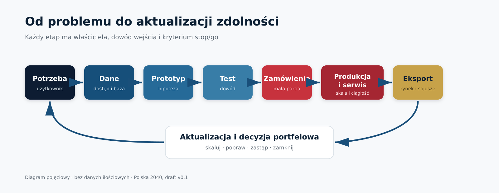
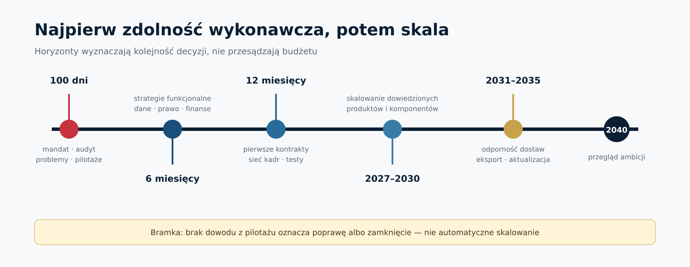

Polska 2040: decyzje Rady Ministrów
- Suwerenność technologiczna jako system realizacji
- Niezależny draft ekspercki v0.1 · 21.07.2026
- Dziś: mandat i przegląd — nie docelowy budżet
Niezależny jawnoźródłowy projekt analityczny — bez materiałów niejawnych — nie jest dokumentem rządowym.
1 / 15
Decyzja, nie manifest
- KANDYDAT DEC-0001: uruchomić sześciomiesięczny przegląd
- KANDYDAT DEC-0002: wskazać właściwego ministra i integratora portfela przy KPRM
- KANDYDAT DEC-0003: uruchomić ograniczone pilotaże z bramkami stop/go
- Wrócić do RM z bazą, wariantami finansowymi i red-team
Niezależny jawnoźródłowy projekt analityczny — bez materiałów niejawnych — nie jest dokumentem rządowym.
2 / 15
Dlaczego teraz
- SAFE: umowa pożyczki 43,7 mld EUR; nie dotacja ani pełna wypłata — CLM-1208
- Plan KPRM: 89% dla polskiej gospodarki; wynik wymaga pomiaru — CLM-1209
- Polska już uczestniczy w BraveTech EU — CLM-1214
- Okno finansowania bez wspólnego systemu może utrwalić fragmentację
Niezależny jawnoźródłowy projekt analityczny — bez materiałów niejawnych — nie jest dokumentem rządowym.
3 / 15
Diagnoza: osiem wąskich gardeł
- Potrzeba i użytkownik
- Dane, test i zamówienie
- Produkcja, komponenty i serwis
- Kadry, finansowanie, prawo i eksport
Niezależny jawnoźródłowy projekt analityczny — bez materiałów niejawnych — nie jest dokumentem rządowym.
4 / 15
Cykl realizacji
- Każdy etap ma właściciela, dowód i warunek wyjścia
- Zamknięcie projektu jest wynikiem, nie porażką

Niezależny jawnoźródłowy projekt analityczny — bez materiałów niejawnych — nie jest dokumentem rządowym.
5 / 15
Governance: najpierw istniejące mechanizmy
- Właściwy minister prowadzi dokument i formalny proces
- Funkcja KPRM integruje portfel, dane i eskalacje
- Resorty zachowują odpowiedzialność wykonawczą
- Nowy pełnomocnik dopiero po dowodzie niewydolności
Niezależny jawnoźródłowy projekt analityczny — bez materiałów niejawnych — nie jest dokumentem rządowym.
6 / 15
Pierwsze 100 dni
- REKOMENDACJA: mandat, RACI, audyt bazowy i katalog problemów
- Pilotaż danych, testów i kontraktów etapowych
- Raport luk, sprzeczności i kosztu działań odwracalnych

Niezależny jawnoźródłowy projekt analityczny — bez materiałów niejawnych — nie jest dokumentem rządowym.
7 / 15
Zamówienia iteracyjne
- Problem → wykonalność → prototyp → test użytkownika
- Mała partia kupuje dane niezawodności i serwisu
- Skala wymaga TCO, cyber, praw i alternatyw
- Opcja nie jest automatycznym zobowiązaniem
Niezależny jawnoźródłowy projekt analityczny — bez materiałów niejawnych — nie jest dokumentem rządowym.
8 / 15
Dane i odpowiedzialne AI
- Federacja właścicieli danych, nie jedno centralne jezioro
- Odseparowany test, wersjonowanie i pełny ślad
- Karta modelu, monitoring i prawo wstrzymania
- Minimum: sześć zasad NATO — CLM-1220
Niezależny jawnoźródłowy projekt analityczny — bez materiałów niejawnych — nie jest dokumentem rządowym.
9 / 15
Przemysł i cykl życia
- Kontroluj / współkontroluj / dywersyfikuj / zaakceptuj
- Mierz zweryfikowaną moc, nie deklarację nominalną
- Interfejsy, konfiguracja, naprawa i aktualizacje
- Ćwiczenia 30/90/180 dni jako test, nie obietnica
Niezależny jawnoźródłowy projekt analityczny — bez materiałów niejawnych — nie jest dokumentem rządowym.
10 / 15
Kadry: popyt przed skalą
- Technicy, produkcja i serwis równie ważne jak konstruktorzy
- HIPOTEZA DO PRZETESTOWANIA: przekwalifikowanie może dać wcześniejszy mierzalny efekt niż nowa uczelnia
- Istniejące szkoły i uczelnie tworzą sieć
- Porównać koszt, kompetencję, zatrudnienie i retencję 12/24 miesiące względem bazy
Niezależny jawnoźródłowy projekt analityczny — bez materiałów niejawnych — nie jest dokumentem rządowym.
11 / 15
Ukraina, UE i NATO
- Portfolio partnerstw, nie jeden preferowany dostawca
- Umowa Polska–Ukraina daje ramy, nie gotowe JV — CLM-1212
- BraveTech EU: mierzyć testy, kontrakty, inwestycje i IP — CLM-1213/1214
- Due diligence: właściciele, cyber, eksport i ciągłość
Niezależny jawnoźródłowy projekt analityczny — bez materiałów niejawnych — nie jest dokumentem rządowym.
12 / 15
Finansowanie: trzy scenariusze
- L: integracja i ograniczony pilotaż
- B: dane, małe partie, komponenty, kadry i regiony
- H: szeroki CAPEX tylko po bazie, popycie i decyzji ryzyka
- Jeden identyfikator kosztu — zero podwójnego liczenia
Niezależny jawnoźródłowy projekt analityczny — bez materiałów niejawnych — nie jest dokumentem rządowym.
13 / 15
Dashboard i ryzyka
- KPI: czas, test użytkownika, TCO, substytucja, retencja, eksport
- Raportować projekty zamknięte i uniknięte zobowiązania
- Ryzyka: vendor capture, pozorna lokalizacja, skala przed dowodem
- Red-team niezależny od autora, finansującego i dostawcy
Niezależny jawnoźródłowy projekt analityczny — bez materiałów niejawnych — nie jest dokumentem rządowym.
14 / 15
Decyzje na dziś
- KANDYDACI DEC-0001 i DEC-0002: zatwierdzić mandat, właścicieli i dwukwartalny test modelu
- KANDYDACI DEC-0003 i DEC-0004: uruchomić portfel pilotaży, pilotaż danych i kontrakty dowodowe
- KANDYDAT DEC-0008: zlecić model finansowy; nie zatwierdzać dziś docelowej kwoty, fabryki ani dostawcy
- KANDYDAT DEC-0010: przygotować dashboard; za 6 miesięcy skalować, poprawić albo zamknąć na podstawie dowodów
Niezależny jawnoźródłowy projekt analityczny — bez materiałów niejawnych — nie jest dokumentem rządowym.
15 / 15